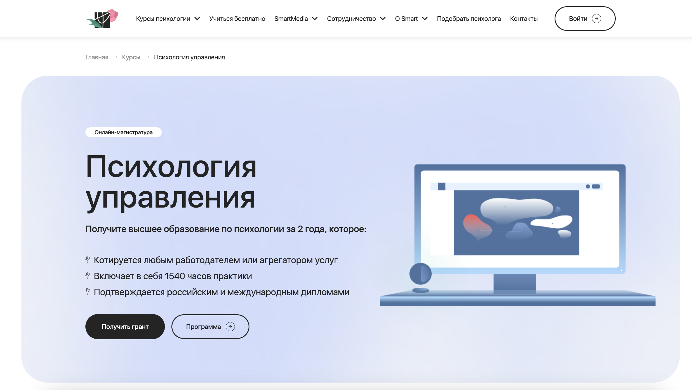
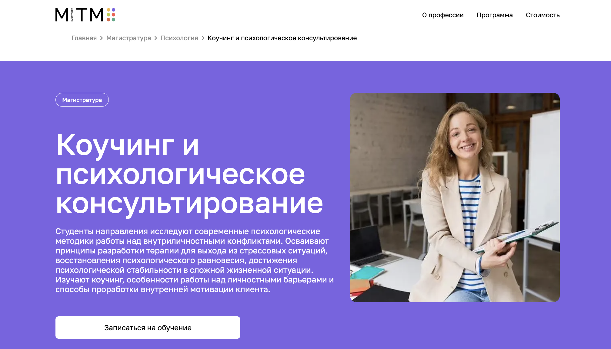
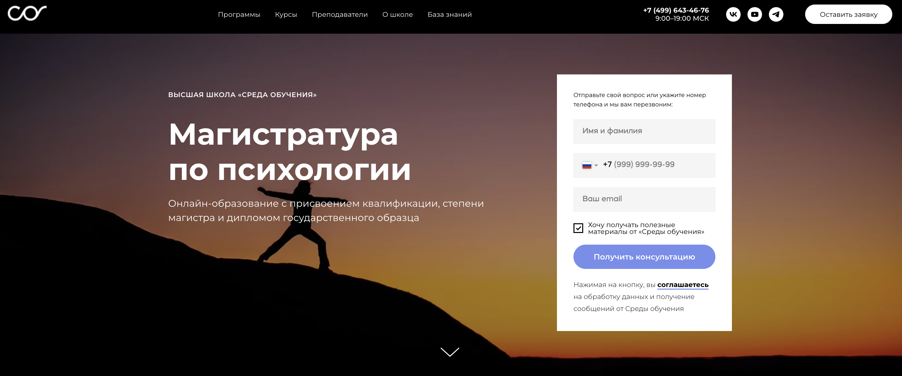
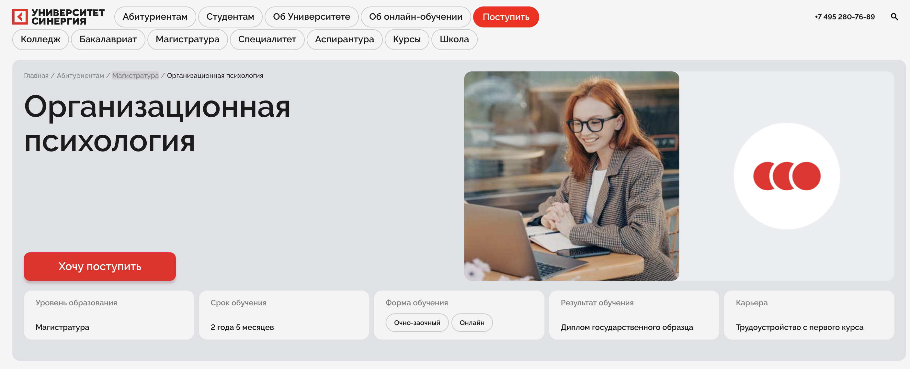
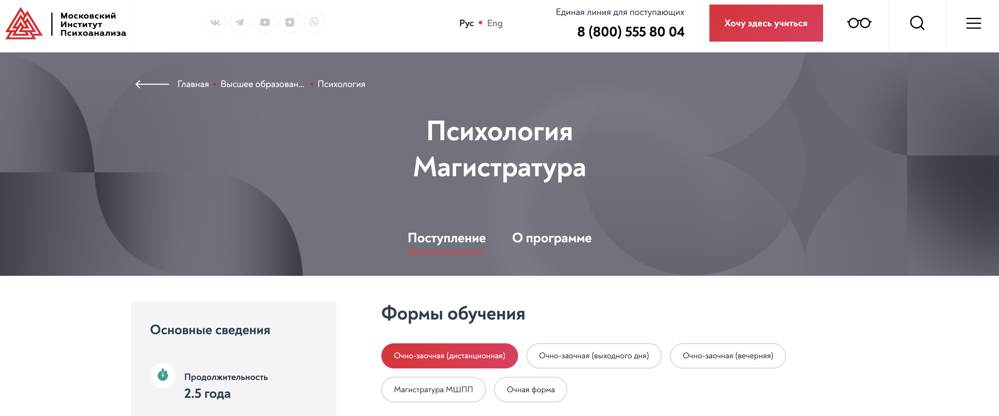
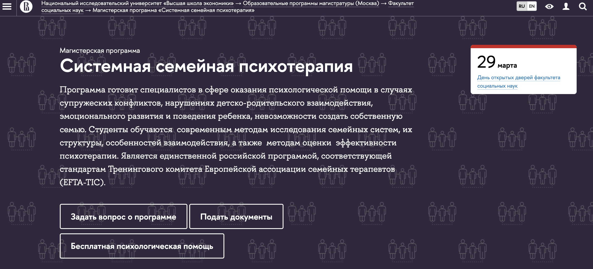
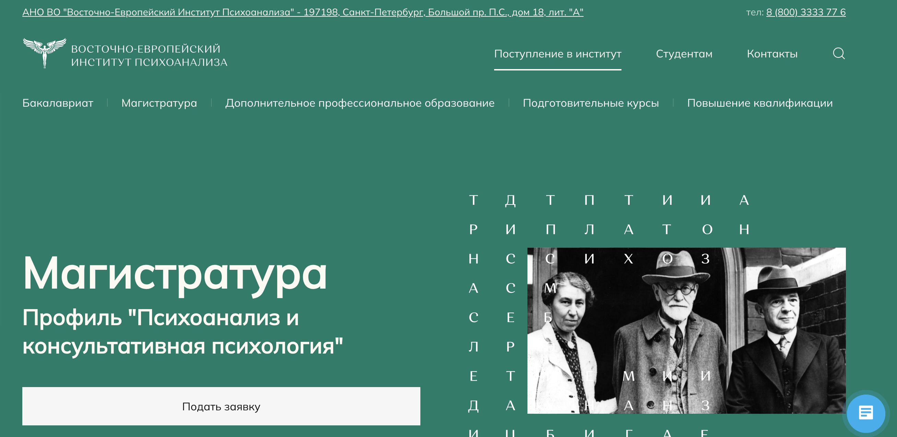
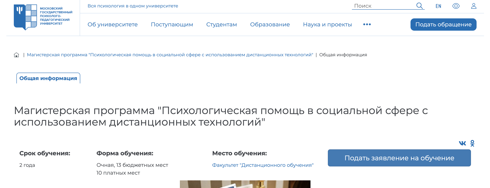

Магистратура по психологии с дистанционным обучением — это возможность получить второе высшее образование, освоить новые профессиональные навыки и повысить квалификацию в области консультативной, клинической и организационной психологии. Дистанционный формат позволяет студентам совмещать учебу с работой, а современные образовательные программы включают практическую подготовку и изучение актуальных методик психологического консультирования. Мы составили рейтинг ТОП-8 магистерских программ 2025 года, которые предлагают диплом государственного образца, качественное обучение и глубокое изучение психологических аспектов в различных сферах.
ТОП дистанционных магистерских программ по психологии
- 🏆 Онлайн-магистратура «Психология управления» — Онлайн-институт Smart
- 🏆 Дистанционная магистратура «Коучинг и психологическое консультирование» — MITM
- 🏆 Магистратура по психологии — Высшая школа «Среда обучения»
- Дистанционная магистратура «Организационная психология» — Университет «Синергия»
- Магистратура по психологии — Московский институт психоанализа
- Системная семейная психотерапия — НИУ ВШЭ
- Психоанализ и консультативная психология — Восточно-Европейский Институт Психоанализа
- Психологическая помощь в социальной сфере с использованием дистанционных технологий — Московский государственный психолого-педагогический университет
Вам могут быть интересны онлайн-программ высшего образования по психологии
- 🏆 Психология 37.03.01 (бакалавриат) – Московский институт психологии (по промокоду onlinekursy скидка 🎁 10%)
- 🏆 Бакалавриат по психологии – Институт психологии Smart
- 🏆 Магистратура по психологии – Институт психологии Smart
- Психология личности, магистратура – РАНХиГС и Психодемия (по промокоду OnlineKursy действует скидка 🎁 5000 руб)
- Бизнес-психология в цифровой среде, магистратура – Московский институт психоанализа и Психодемия
- Психология, бакалавриат – Московский институт технологий и управления
- Коучинг и психологическое консультирование, магистратура – Московский институт технологий и управления
- Практическая психология, бакалавриат — Московский Институт Профессионального Образования (по промокоду onlinekursy действует скидка 🎁 10%)
ВУЗы, где можно пройти профессиональную переподготовку на психолога в дистанционном формате
- Московский институт психологии (по промокоду kursy скидка 🎁 10%)
- АНО ДПО «НАДПО» (по промокоду onlinekursy действует скидка 🎁 5%)
- Международный институт психологии Smart
- Psychodemia (по промокоду OnlineKursy действует скидка 🎁 5000 руб)
- Talentsy (по промокоду EDPART5 скидка 🎁 5%)
- МИПО Психология (по промокоду onlinekursy 🎁 скидка 5%)
- Московская школа практической психологии (МШПП)
- Московский институт технологий и управления (MITM)
- Московский институт профессионального образования (МИПО) (по промокоду onlinekursy действует скидка 🎁 10%)
- АНО НИИДПО
- НЦРДО (по промокоду onlinekursy действует скидка 🎁 5%)
- IPPSS
- Moscow MBA (по промокоду onlinekursy скидка 🎁 10%)
- Институт Профессионального Образования (ИПО)
- EdProdPO
- MBSchool
- МШП
- ЦАППКК (по промокоду onlinekursy действует скидка 🎁 5%)
- АПОК ДПО
- ЭКОДПО
- НЦПО
1. 🏆 Онлайн-магистратура «Психология управления» — Smart
- ✅ Официальный сайт: smart-inc.ru
- 💸 Цена: 800 000 ₽ (с учетом гранта).
- 💳 Рассрочка: доступна на 3, 6, 12, 24 месяца, первый платеж через 1 месяц от 33 333 руб в мес.
- 📚 Формат: дистанционные видеолекции, тесты, практические занятия, работа в мини-группах.
- ⏳ Продолжительность: 2 года.
- 📜 Документ: 4 диплома: государственный диплом магистра, 2 диплома о профпереподготовке, диплом MBA.
- 📝 Трудоустройство: поддержка Центра карьеры, предоставление клиентов для практики, индивидуальные консультации.
- 🔷 Для кого подходит курс: для специалистов, желающих сменить профессию, HR-менеджеров, руководителей, предпринимателей, желающих развиваться в международной карьере.
Особенности курса:
Программа реализуется в партнерстве с ТГУ и включает все ключевые аспекты психологии управления. Студенты проходят интенсивную практику, начиная с 12-го месяца обучения, что помогает закрепить полученные знания. Образование дистанционное, но диплом выдается как при очной форме. Преподаватели – практикующие эксперты с многолетним опытом. Доступ к учебным материалам остается навсегда, а выпускники могут вступить в профессиональные сообщества. Возможность получения налогового вычета в размере 13% делает обучение более доступным.
Кратко о программе:
- 4659 часов обучения, из них 1540 часов практики.
- Групповые интенсивы и отработка психологических техник в тройках.
- Доступ к платформе 24/7 с любого устройства.
- Программа включает направления: организационная психология, бизнес-психология, консультативная психология.
Чему учатся студенты:
- Развивать лидерские качества и навыки командообразования.
- Проводить диагностику и оценку организационного поведения.
- Разрабатывать программы повышения продуктивности команд.
- Оказывать квалифицированную психологическую помощь в управлении.
- Реализовывать бизнес-проекты и работать с клиентами.
Преимущества:
- Выдача дипломов, котирующихся в России и за рубежом.
- Преподаватели – сертифицированные коучи и бизнес-эксперты.
- Углубленная практика с первыми клиентами через 12 месяцев.
- Отсрочка от армии и студенческий билет с льготами.
- Доступ в Центр карьеры с возможностями профессионального роста.
- Платформа обучения удобна и интуитивно понятна.
- Финансовая поддержка – рассрочка, налоговый вычет, гранты.
Отзывы учеников:
Студенты отмечают высокий уровень преподавания, удобный формат дистанционного обучения и доступность преподавателей. Многие выпускники смогли сменить профессию или повысить свою квалификацию. Особенно ценятся практические занятия, которые позволяют быстро применять знания в реальной работе. Все отзывы
Перейти на официальный сайт курса2. 🏆 Дистанционная магистратуа «Коучинг и психологическое консультирование» — Московский институт технологий и управления
- ✅ Официальный сайт: mitm.institute
- 💸 Цена обучения: 78 600 ₽ за семестр (со скидкой 55 000 ₽).
- 💳 Рассрочка: беспроцентная на 12 месяцев (от 9 170 ₽ в месяц).
- 📚 Формат: дистанционное обучение, включая онлайн-лекции, практические занятия и доступ к записям.
- ⏳ Продолжительность: 2 года 6 месяцев.
- 📜 Документ: диплом магистра государственного образца.
- 📝 Трудоустройство: Программа трудоустройства после завершения обучения.
- 🔷 Для кого подходит курс: для специалистов, желающих подтвердить квалификацию, бакалавров, стремящихся к карьерному росту, и тех, кто хочет сменить профессию.
Особенности курса:
Программа магистратуры ориентирована на подготовку специалистов в области психологического консультирования и коучинга. Дистанционное образование позволяет студентам совмещать учебу с работой. В процессе обучения студенты изучают современные методы работы с внутриличностными конфликтами, осваивают технологии поддержки клиентов в кризисных ситуациях и развивают навыки коучинга. Образовательные модули охватывают консультативную, организационную и клиническую психологию. Выпускники получают государственный диплом, подтверждающий квалификацию.
Кратко о программе:
- Обучение проходит в дистанционном формате
- Практические занятия на образовательной онлайн-платформе
- Поддержка кураторов 24/7
- Перевод из других вузов без потери курса
Чему учатся студенты:
- Методам консультативной психологии
- Технологиям коучинга и мотивации клиентов
- Стратегиям решения внутриличностных конфликтов
- Психологической помощи в кризисных ситуациях
- Организационной психологии и HR-технологиям
Преимущества:
- Обучение без ЕГЭ
- Гибкий график занятий
- Возврат 13% от стоимости обучения
- Доступ к записям лекций до конца обучения
- Программа адаптирована под требования работодателей
- Поддержка наставников и технической службы
- Возможность оплатить обучение из-за рубежа
Отзывы учеников:
Студенты отмечают удобный дистанционный формат, высокое качество преподавания и доступность материалов. Они подчеркивают практическую направленность курса, что помогает быстрее применить знания в работе. Все отзывы
Перейти на официальный сайт курса3. 🏆 Магистратура по психологии — Высшая школа «Среда обучения»
- ✅ Официальный сайт: psychology.sredaobuchenia.ru
- 💸 Цена обучения: 90 000 ₽ за семестр.
- 💳 Рассрочка: доступна.
- 📚 Формат: дистанционные лекции, записи занятий, чат с преподавателями.
- ⏳ Продолжительность: 2,5 года.
- 📜 Документ: диплом магистра государственного образца.
- 📝 Трудоустройство: возможность трудоустройства в сфере психологического консультирования.
- 🔷 Для кого подходит курс: для тех, кто хочет работать с клиентами, помогать людям в сложных жизненных ситуациях.
Особенности курса:
Программа включает изучение современных методов консультирования, диагностики и психологической помощи. Студенты осваивают практические навыки работы с различными категориями клиентов, включая людей с кризисными состояниями, семейными проблемами и сложностями в профессиональной сфере. В процессе обучения предоставляется доступ к обширной онлайн-библиотеке и возможность общения с экспертами в области психологии.
Кратко о программе:
- Гибкий формат обучения с возможностью пересматривать лекции
- Опытные преподаватели — ведущие практикующие психологи
- Поддержка в профессиональном развитии и трудоустройстве
- Доступ к актуальным исследованиям в области консультативной психологии
Чему учатся студенты:
- Методам консультирования и психологической поддержки
- Диагностике и анализу эмоционального состояния клиентов
- Работе с клиентами в кризисных ситуациях
- Использованию различных психотерапевтических подходов
Преимущества:
- Обучение проходит дистанционно — доступно из любой точки мира
- Диплом магистра дает возможность профессионального роста
- Преподаватели — признанные эксперты в области консультативной психологии
- Широкие перспективы карьерного роста после окончания программы
Отзывы учеников:
Студенты отмечают удобный формат дистанционного обучения, высокий профессионализм преподавателей и актуальность учебных материалов. Большинство выпускников успешно работают в сфере консультативной психологии. Все отзывы
Перейти на официальный сайт курса4. Дистанционная магистратура «Организационная психология» — Университет «Синергия»
- ✅ Официальный сайт: synergyonline.ru
- 💸 Цена обучения: уточняйте на сайте.
- 💳 Рассрочка: доступна, условия уточняйте у менеджера.
- 📚 Формат: очно-заочный и онлайн, включает лекции, вебинары, тестирование и курсовые работы.
- ⏳ Продолжительность: 2 года 5 месяцев.
- 📜 Документ: диплом государственного образца.
- 📝 Трудоустройство: Помощь в трудоустройстве с первого курса.
- 🔷 Для кого подходит курс: для специалистов в сфере управления персоналом, HR-менеджеров, бизнес-консультантов и психологов, желающих расширить свои компетенции.
Особенности курса:
Программа магистратуры позволяет студентам освоить прикладные методики, необходимые для эффективного управления персоналом. Курс охватывает ключевые аспекты организационной психологии, включая психологические основы кадрового отбора, корпоративную безопасность и профессиональное развитие сотрудников. Учебный процесс строится на применении современных методов психологического консультирования, что обеспечивает выпускникам актуальные профессиональные навыки. Онлайн-формат дает возможность обучаться дистанционно, сохраняя баланс между работой и учебой.
Кратко о программе:
- Современные HR-технологии
- Методология командной работы
- Бизнес-психологический консалтинг
- Психологические аспекты оценки персонала
- Прикладные аспекты психологии труда
Чему учатся студенты:
- Применять психологические методы в управлении
- Оценивать профессиональные компетенции сотрудников
- Разрабатывать стратегии мотивации персонала
- Консультировать по вопросам корпоративной культуры
- Использовать инструменты психодиагностики в HR
Преимущества:
- Гибкий формат обучения, включая дистанционные образовательные технологии
- Практические навыки, востребованные в HR и бизнесе
- Преподавание ведущими экспертами в области психологии
- Помощь в трудоустройстве и стажировке
Отзывы учеников:
Студенты отмечают, что курс дает глубокие знания в области организационной психологии и практическую подготовку для работы в HR. Многие выделяют удобный онлайн-формат и доступность преподавателей, что делает процесс обучения комфортным. Все отзывы
Перейти на официальный сайт курса5. Магистратура по психологии — Московский институт психоанализа
- ✅ Официальный сайт: inpsycho.ru
- 💸 Цена обучения: от 110 000 руб за семестр.
- 💳 Рассрочка: доступна, уточняется при обращении в приёмную комиссию.
- 📚 Формат: дистанционное обучение, включающее видеолекции, домашние задания, тесты и практические занятия.
- ⏳ Продолжительность: 2 года.
- 📜 Документ: диплом магистра государственного образца.
- 📝 Трудоустройство: выпускники получают поддержку в трудоустройстве и возможность участия в профессиональных сообществах.
- 🔷 Для кого подходит курс: для специалистов с высшим образованием, желающих углубить знания в области психологии и получить диплом магистра.
Особенности курса:
Магистерская программа по психологии в Московском институте психоанализа направлена на подготовку специалистов в различных направлениях психологии. Студенты получают практическую подготовку, изучая современные методы психологического консультирования, клинической и организационной психологии. Обучение проводится дистанционно, что позволяет совмещать учёбу с профессиональной деятельностью. Программа включает изучение психологических аспектов здоровья, личности и социальной сферы, что обеспечивает всестороннее развитие профессиональных навыков.
Кратко о программе:
- Изучение клинической, консультативной и организационной психологии.
- Развитие практических навыков в психологическом консультировании.
- Освоение современных методов диагностики и коррекции психологических проблем.
- Возможность участия в научных исследованиях и проектах.
Чему учатся студенты:
- Проведению индивидуального и семейного консультирования.
- Диагностике и коррекции психологических расстройств.
- Применению методов организационной психологии в бизнесе.
- Разработке и реализации психологических тренингов и программ.
Преимущества:
- Дистанционный формат обучения позволяет учиться из любой точки мира.
- Диплом государственного образца признаётся работодателями.
- Широкий спектр изучаемых направлений психологии.
- Возможность совмещения учёбы с профессиональной деятельностью.
Отзывы учеников:
Студенты отмечают высокий уровень преподавания и практическую направленность курса. Многие подчеркивают удобство дистанционного формата и возможность применения полученных знаний в профессиональной деятельности. Все отзывы
Перейти на официальный сайт курса6. Системная семейная психотерапия — НИУ ВШЭ
- ✅ Официальный сайт: hse.ru
- 💸 Цена обучения: уточняется в приемной комиссии.
- 💳 Рассрочка: возможна.
- 📚 Формат: очные занятия, клиническая практика, работа с кейсами.
- ⏳ Продолжительность: 2 года.
- 📜 Документ: диплом магистра государственного образца.
- 📝 Трудоустройство: выпускники получают возможности работы в клинической, семейной и консультативной психологии.
- 🔷 Для кого подходит курс: для будущих и действующих психологов, желающих освоить современные методы работы с семьями и парами.
Особенности курса:
Программа магистратуры разработана в соответствии с европейскими стандартами семейной психотерапии. В процессе обучения студенты изучают современные методы диагностики и терапии семейных проблем. Образовательный процесс включает работу с реальными клиентами, что помогает сформировать практические навыки. Магистранты проходят стажировки в ведущих клиниках и центрах психологического консультирования. Курс ориентирован на освоение комплексного подхода к работе с супружескими конфликтами и детско-родительскими отношениями. Выпускники получают фундаментальные знания в области клинической и консультативной психологии. После окончания программы магистры могут работать в государственных и частных центрах психологической помощи.
Кратко о программе:
- Единственная российская магистратура, соответствующая стандартам EFTA-TIC.
- Подготовка специалистов в области семейного консультирования.
- Обучение включает клиническую практику и супервизию.
- Возможность работать в частных и государственных учреждениях.
Чему учатся студенты:
- Современным методам диагностики семейных проблем.
- Разработке и проведению терапевтических программ для семей.
- Применению техник работы с супружескими парами и детьми.
- Психологическому консультированию и супервизии.
Преимущества:
- Государственная аккредитация и международное признание.
- Возможность прохождения стажировок в ведущих центрах психологии.
- Обучение у ведущих специалистов в области семейной терапии.
- Развитие практических навыков работы с клиентами.
Отзывы учеников:
Студенты отмечают высокий уровень преподавания и практическую направленность курса. Особенно ценят возможность работы с реальными клиентами под супервизией опытных специалистов. Выпускники подчеркивают, что магистратура предоставляет конкурентные преимущества при трудоустройстве. Все отзывы
Перейти на официальный сайт курса7. Психоанализ и консультативная психология — Восточно-Европейский Институт Психоанализа
- ✅ Официальный сайт: eeip.ru
- 💸 Цена обучения: от 100 000 руб./семестр.
- 💳 Рассрочка: возможно получение образовательного кредита с государственной поддержкой.
- 📚 Формат: очное, очно-заочное и дистанционное обучение с тренингами и мастерскими.
- ⏳ Продолжительность: от 2 лет до 2 лет 5 месяцев.
- 📜 Документ: диплом магистра по направлению «Психология».
- 📝 Трудоустройство: подготовка к частной практике и исследованиям в научном сообществе.
- 🔷 Для кого подходит курс: для студентов, желающих углубиться в психоанализ и консультативную психологию, и планирующих вести частную практику.
Особенности курса:
Программа магистратуры Восточно-Европейского Института Психоанализа ориентирована на глубокое освоение психоанализа и консультативной психологии. За счет качественного преподавательского состава, включающего кандидатов и докторов наук, студенты получают ценные навыки и знания. Особенностью курса является акцент на развитие практических навыков через тренинги и мастерские. Выпускники магистратуры могут интегрироваться в профессиональное сообщество и проводить свои исследования. Образование открывает возможности для работы с клиентами и участия в научных конференциях.
Чему учатся студенты:
- Развитию консультационных навыков и практическому применению психологии
- Проведению самостоятельных исследований в области психоанализа
- Участию в научных мероприятиях и публикации статей
- Глубокому изучению теорий и методов психоанализа
Преимущества:
- Обучение ведется опытными докторами наук
- Широкие возможности для практики и научных исследований
- Гибкие форматы обучения, включая дистанционные технологии
- Поддержка личного и профессионального роста студентов
Отзывы учеников:
Студенты отмечают высокий уровень преподавания и полезность практических занятий. Многие подчеркивают доступность дистанционного обучения и возможность влиться в сообщество профессионалов. Все отзывы
Перейти на официальный сайт курса8. Психологическая помощь в социальной сфере с использованием дистанционных технологий — Московский государственный психолого-педагогический университет
- ✅ Официальный сайт: mgppu.ru
- 💸 Цена обучения: Уточняйте в приемной комиссии.
- 💳 Рассрочка: Доступна по запросу.
- 📚 Формат: Очная форма с применением дистанционных технологий.
- ⏳ Продолжительность: 2 года.
- 📜 Документ: Диплом магистра государственного образца.
- 📝 Трудоустройство: Гарантированное трудоустройство.
- 🔷 Для кого подходит курс: Для будущих психологов, интересующихся социальной и консультативной психологией, а также тем, кто стремится работать в социальной или образовательной сфере.
Особенности курса:
Этот курс предлагает уникальную возможность изучения психологической помощи в социальной сфере с использованием современных дистанционных методов. Программа разработана для будущих специалистов, которые хотят углубленно изучить консультативные аспекты в психологии и научиться применять дистанционные технологии в этом процессе. Под руководством кандидата психологических наук, программа предоставляет глубокие академические знания и реальные практические навыки, необходимые для работы в динамично развивающейся социальной среде. Также акцентируется внимание на работе с социально уязвимыми группами населения, что делает обучение актуальным и социально значимым.
- Модули обучения формируются участниками процесса
- Практическое погружение в профессии через реальные кейсы
- Консультации с ведущими преподавателями
- Участие в государственных проектах в социальной сфере
Чему учатся студенты:
- Разработке авторских программ психологической помощи
- Проведению коррекционно-развивающих тренингов
- Оказанию помощи онлайн и очно
- Проведению научных исследований в психологии
Преимущества:
- Возможность учиться из любой точки мира
- Обучение в одной из ведущих российских научных школ
- Получение государственного диплома магистра
- Гарантированное трудоустройство после окончания
Отзывы учеников:
Студенты отмечают возможность применить полученные навыки в реальных условиях, доступные и интересные лекции, а также высокий профессионализм преподавателей, что способствует улучшению карьерных перспектив. Все отзывы
Перейти на официальный сайт курсаЧто такое магистратура по психологии дистанционно?
Магистратура по психологии дистанционно представляет собой форму обучения, позволяющую студентам изучать психологию на продвинутом уровне, не посещая занятия очно. Она дает возможность получать знания и практические навыки в области психологии консультирования, клинической и прикладной психологии через онлайн-платформы, что актуально для тех, кто совмещает учебу с работой или живет в удаленных регионах.
Какова структура дистанционных образовательных программ магистратуры по психологии?
Дистанционные образовательные программы магистратуры по психологии обычно включают теоретические дисциплины и практическую подготовку. Учебный процесс предусматривает изучение психологических аспектов, развитие профессиональных навыков, а также выполнение исследовательских проектов. Дистанционное образование совмещает лекции в онлайн-формате, вебинары, интерактивные задания и самостоятельную работу студентов.
Какие дисциплины изучают в онлайн-магистратуре по психологии?
В магистратуре по психологии студенты изучают такие дисциплины, как клиническая психология, психологическое консультирование, социальная и психологическая помощь, психология здоровья, психология личности, а также организационная и прикладная психология. Эти дисциплины направлены на комплексное понимание психологии и развитие практических навыков.
Какие преимущества предоставляет магистерское дистанционное обучение по психологии?
Дистанционная магистратура по психологии имеет несколько преимуществ: гибкость учебного процесса, возможность учиться из любой точки мира, совмещение учебы с работой, доступ к международным преподавателям и образовательным ресурсам. Таким образом, студенты получают диплом магистра с минимальными затратами времени и ресурсов.
Кто может поступить учиться на дистанционную магистратуру по психологии?
Поступить на дистанционную магистратуру по психологии может любой, кто имеет диплом бакалавра, в том числе и в области психологии или смежных дисциплин. Также низовый уровень вступительных требований позволяет многим абитуриентам попробовать себя в дистанционном обучении с учетом своих профессиональных и личных целей.
Какие навыки получают выпускники магистратуры после завершения обучения на психолога?
Выпускники магистратуры, прошедшие дистанционное обучение по психологии, получают разнообразные практические и теоретические навыки, включая навыки психологического консультирования, клинической практики, психологической диагностики и интервенции, а также навыки социальной и семейной поддержки. Такие выпускники готовы к профессиональной деятельности в различных сферах психологии.
Как проходит процесс онлайн-обучения в магистратуре по психологии?
Процесс обучения в магистратуре по психологии дистанционно включает онлайн-лекции, интерактивные семинары, выполнение самостоятельных заданий и исследований, а также участие в онлайн-дискуссиях с преподавателями и сокурсниками. Обучение проводится на образовательных платформах, позволяющих взаимодействовать с преподавателями в режиме реального времени.
Какую подготовку получают студенты?
Студенты дистанционной магистратуры по психологии получают подготовку, ориентированную на основные направления психологии, такую как клиническая, консультативная и прикладная психология. Учебные программы также включают развитие практических навыков в области психологической помощи и поддержки, адаптации современных методов диагностики и интервенции.
Каков процесс получения диплома после завершения магистратуры по психологии?
После завершения дистанционной магистратуры по психологии, студенты получают диплом государственного образца, подтверждающий их квалификацию и профессиональную готовность работать в области психологии. Окончание программы предполагает успешное завершение всех учебных модулей и выполнение квалификационной работы или проекта.
Что входит в магистерские программы обучения по клинической психологии дистанционно?
Программы магистратуры по клинической психологии дистанционно охватывают изучение психологического здоровья, основы психологической диагностики, методы психотерапии и психологической интервенции. Студенты изучают современные методики выявления и коррекции психических и поведенческих отклонений, а также развивают навыки оказания психологической помощи кризисным клиентам.
Какие современные методы используются в дистанционном обучении по психологии?
Современные методы дистанционного обучения по психологии включают использование виртуальных симуляторов, цифровых платформ для видеолекций, интерактивных тренингов и ментальных карт. Эти технологии позволяют студентам получать практические навыки в онлайн-среде, участвовать в интерактивных обсуждениях и работать над групповыми проектами.
Какую роль играют практические навыки в дистанционном обучении в магистратуре по психологии?
Практические навыки в дистанционной магистратуре по психологии играют ключевую роль в подготовке будущих специалистов. Специальные модули и семинары, проводимые в онлайн-формате, направлены на развитие клинических и консультативных навыков, что позволяет выпускникам быстро адаптироваться к профессиональной среде и эффективно работать с клиентами.
Какого уровня диплом получают выпускники дистанционной магистратуры по психологии?
Выпускники дистанционной магистратуры по психологии получают диплом государственного образца магистра, который признается в различных странах и дает возможность работать по специальности в международной сфере. Такой диплом подтверждает квалификацию выпускника и открывает доступ к профессиональной деятельности в области психологии.
Что дает магистратура по организационной психологии?
Дистанционная магистратура по организационной психологии обучает студентов управлению человеческими ресурсами, развитию команд, организационной диагностике и стратегическому управлению изменениями. Она позволяет выпускникам эффективно работать в бизнес-среде и участвовать в разработке мотивационных программ, улучшении корпоративной культуры и решении конфликтных ситуаций.
Как дистанционное обучение в магистратура помогает в развитии карьеры психолога?
Дистанционная магистратура по психологии способствует карьерному развитию, предоставляя углубленные знания и компетенции, необходимые для работы в различных психологических специальностях. Она увеличивает шансы студентов на получение высококвалифицированных должностей в сферах образования, здравоохранения, бизнеса и социальной защиты, открывая возможности для профессионального роста и повышения доходов.
Что такое второе высшее образование по психологии и где можно его получить?
Второе высшее образование по психологии – это возможность получить квалификацию в области психологии для людей, уже имеющих диплом бакалавра или специалиста по любой специальности. Оно позволяет освоить дополнительные профессиональные навыки и сменить сферу деятельности.
Вузы предлагают программы бакалавриата, магистратуры и профессиональную переподготовку в области психологии. Среди популярных вариантов – государственный университет, институт психоанализа, факультеты психологии в крупных учебных заведениях.
Какие направления подготовки доступны?
- Клиническая психология
- Психологическое консультирование
- Социальная психология
- Детская психология
- Организационная психология
- Семейная психология
- Психология личности
Как проходит обучение?
Форматы обучения включают очную, заочную и дистанционную форму. Дистанционный формат обучения позволяет студентам изучать дисциплины онлайн, сочетая учебу с работой.
Можно ли получить второе высшее образование по психологии дистанционно?
Да, психология дистанционно доступна в ряде вузов. Дистанционные программы позволяют получать знания в удобном режиме, без привязки к месту учебного заведения.
Сколько длится обучение на втором высшем?
Сроки обучения зависят от программы. Второе высшее образование обычно занимает 2-4 года. Профессиональную переподготовку можно пройти за 6-18 месяцев.
Какие дипломы получают выпускники?
Выпускники получают дипломы государственного образца, подтверждающие квалификацию в области психологии. В случае профессиональной переподготовки выдается диплом о дополнительном профессиональном образовании.
Как поступить на второе высшее образование по психологии?
Для поступления необходимо подать документы в выбранный вуз. В некоторых учебных заведениях требуется сдача вступительных экзаменов, но часто поступление происходит без ЕГЭ.
Какие дисциплины изучают студенты?
- Общая психология
- Психологическое консультирование
- Клиническая психология
- Основы психологии личности
- Социальная психология
- Практическая психология
- Организационная психология
Какие вузы предлагают программы переподготовки по психологии?
Московский институт психоанализа, гуманитарный университет, государственные университеты и частные образовательные учреждения проводят программы профессиональной переподготовки.
Сколько стоит обучение?
Стоимость обучения зависит от формата и учебного заведения. Очная форма в государственных университетах дороже, дистанционные программы имеют более доступную стоимость.
Можно ли работать психологом после второго высшего образования?
Да, получив диплом, выпускники могут работать психологами в образовательных учреждениях, психологических центрах, заниматься частной практикой или работать в корпоративной сфере.
Чем отличается профессиональная переподготовка от второго высшего?
Второе высшее дает полноценное психологическое образование, а переподготовка позволяет освоить дополнительные навыки и получить квалификацию за более короткий срок.
Какие карьерные перспективы у выпускников?
Выпускники работают практическими психологами, клиническими психологами, социальными психологами, консультантами, детскими психологами, преподавателями психологии и HR-специалистами.
Как выбрать программу обучения на втором высшем?
Выбор программы зависит от целей – если нужна фундаментальная подготовка, лучше выбрать бакалавриат или магистратуру. Для быстрого освоения профессии подойдет профессиональная переподготовка.
------------------------------------------------
Реклама. Информация о рекламодателе по ссылкам в статье.